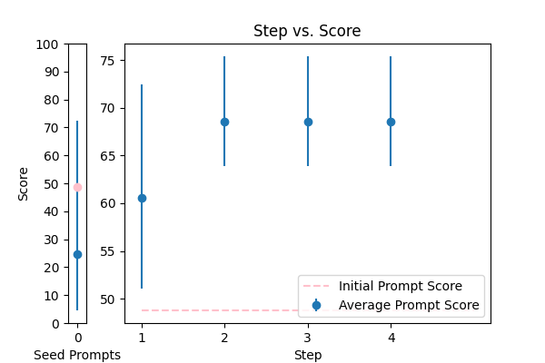
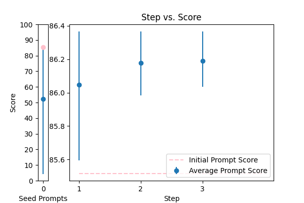

| 2 |
 |
Correct the grammar in the sentence: {TEXT} |
error_correction |
16.501258 |
21.674484 |
\n\n###Instruction###\nImagine you are a meticulous language examiner responsible for refining sentences to perfection. Correct the grammar in the sentence provided, ensuring that the revised sentence is not only error-free but also sounds like it was written by a native English speaker. \n\n###Example###\nIf the input sentence is "The dog chased it's tail," the corrected sentence would be "The dog chased its tail."\n\n###Task###\nPlease correct the grammar in the sentence: {TEXT}\n\n###Output###\nThe revised sentence, polished to perfection, is: \n\n |
79.490626 |
79.940757 |
NA |
NA |
| 3 |
 |
Reformat the following transcript into Markdown, bolding the speakers. Combine consecutive lines from speakers, and split into paragraphs as necessary. Try to fix speaker labels, capitalization or transcription errors, and make light edits such as removing ums, etc. There is some Danish, please italicize the Danish sentences. Reply with only the corrected transcript as we will be using your output programmatically:\n\n{TEXT} |
error_correction |
23.051689 |
18.476235 |
\n\nGuidelines for Reformulating a Transcript into Markdown:\n\nTo produce a high-quality, polished transcript, follow these meticulous steps:\n\n1. Read the entire transcript carefully, identifying speaker labels, capitalization, and transcription errors.\n2. Combine consecutive lines from the same speaker, splitting the text into paragraphs as necessary.\n3. Use Markdown syntax to format speakers' names in bold, ensuring accurate identification.\n4. Italicize Danish sentences using Markdown syntax, preserving the original content's intent.\n5. Perform light edits to remove filler words, such as "ums," and refine the transcript for clarity.\n6. Verify the transcript for accuracy, completeness, and adherence to Markdown formatting rules.\n\nTask:\nPlease reformulate the following transcript into Markdown, following the above guidelines:\n\n{TEXT}\n\nReply with only the corrected transcript, as we will be using your output programmatically.\n\n |
72.418306 |
69.833174 |
NA |
NA |
| 0 |
 |
Please format the following raw transcript for readability, including punctuation, speaker labels (look for semicolons after names), and spacing. Remove filler words:\n\n{TEXT}\n |
error_correction |
48.783366 |
47.858266 |
\n\n### Expert Transcription Guidelines ###\n\nYour task is to meticulously transform the raw transcript below into a polished, readable format, adhering to the highest standards of professional transcription excellence.\n\n### Essential Requirements ###\n\n1. Thoroughly review the provided transcript to identify areas for improvement.\n2. Remove filler words that do not contribute to the meaning of the text.\n3. Insert precise punctuation to enhance clarity and comprehension.\n4. Label speakers with their names followed by semicolons for clear attribution.\n5. Utilize strategic spacing to separate speakers and facilitate easy reading.\n\n### Unbiased Output ###\nEnsure that your answer is unbiased and does not rely on stereotypes.\n\n### Example of Excellence ###\nA well-formatted transcript should resemble this structure:\n"Speaker 1: This is a well-crafted sentence, free of filler words and errors.\nSpeaker 2: Proper spacing and punctuation make this transcript a pleasure to read."\n\n### Input Transcript ###\n{TEXT}\n\nPlease provide the expertly formatted transcript, showcasing your mastery of transcription formatting.\n\n |
75.384056 |
68.411329 |
NA |
NA |
| 4 |
 |
Please fix the grammatical errors in this English translation of Bhagavad Gita. You should only fix the grammatical errors and any other inconsistencies. Do not change the meaning.\n\n{TEXT} |
error_correction |
70.664374 |
67.361777 |
\n ###Instruction###\n Fix the grammatical errors in the provided English translation of Bhagavad Gita. Do not change the meaning of the original text.\n\n ###Example###\n If the input text is "The lord Krishna say to Arjuna,", the corrected output would be "The Lord Krishna said to Arjuna,".\n\n ###Context###\n The Bhagavad Gita is a sacred Hindu scripture that is part of the Indian epic, the Mahabharata. It is a dialogue between Prince Arjuna and the god Krishna, and it explores themes of spirituality, ethics, and morality.\n\n ###Input Data###\n {TEXT}\n\n ###Task###\n Imagine you are an expert English language editor specializing in religious texts. Please correct the grammatical errors in the provided text, ensuring that the original meaning is preserved.\n\n |
79.765252 |
79.498832 |
NA |
NA |
| 1 |
 |
You are a helpful assistant for Aidan. Your task is to correct any spelling discrepancies in the transcribed text. Only add necessary punctuation such as periods, commas, and capitalization, and use only the context provided. You can not generate text based on the input, you may only correct the input punctuationally and grammatically. If the transcribed text is blank then do not return anything\n\n{TEXT} |
error_correction |
85.515674 |
85.769369 |
\n ###Instruction###\n Your task is to correct any spelling discrepancies in the transcribed text. Only add necessary punctuation such as periods, commas, and capitalization, and use only the context provided. You CAN NOT generate text based on the input, you MUST only correct the input punctuationally and grammatically. If the transcribed text is blank, do not return anything.\n\n You will be penalized if you do not adhere to these guidelines.\n\n ###Question###\n Correct the following transcribed text:\n\n {TEXT}\n\n You MUST provide the corrected text without generating any new content.\n |
86.366411 |
87.297614 |
NA |
NA |